Lonely Planet had become irrelevant to Gen Z travelers
Despite having #1 travel content, they needed to understand this new audience and find one specific need to address.
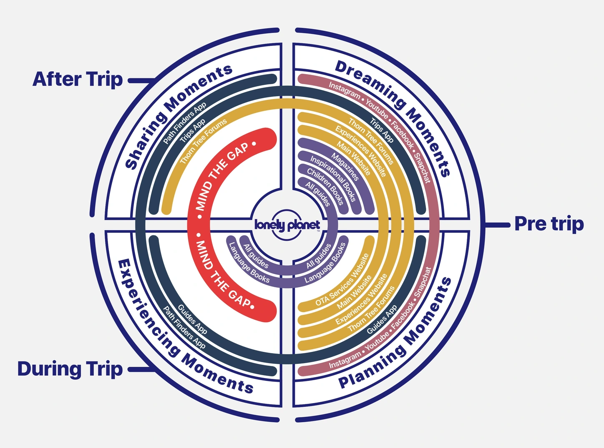
"Gen Z has short attention spans, switches platforms comfortably, and values authentic experiences. We excel at pre-trip planning but are missing the 'during trip' phase."
— Lonely Planet Project LeadWhat unmet needs do budget-conscious Gen Z backpackers have during their trips?
Generative Field Research
High density of international backpackers, diverse traveler types, and accessible hostel environments made it ideal for immersive research.
"What would you tell your old self before going on that trip, knowing what you know now?"
What We Discovered
"I don't plan much. I ask locals or people at the hostel where to go. It feels more authentic that way."
- Prefer spontaneous recommendations over pre-planned itineraries
- Trust peer-to-peer advice over official tourism sources
- Value 'insider' knowledge that feels personal
"I wish I knew about the free walking tours before I paid for a bus tour. Would've saved me €30."
- Small savings add up significantly over long trips
- Frustration around 'tourist traps' and missed opportunities
- Need for money-saving hacks from experienced travelers
"I have like 5 different apps just to figure out what to do here. It's exhausting."
- Info scattered across Reddit, blogs, Instagram, maps
- No single source for location-based, real-time travel hacks
- Cognitive overload from switching between apps
"When I'm standing on a street corner, I need help now — not a 10-minute research session."
- Existing tools require too much effort in live context
- Speed and simplicity are non-negotiable during trips
- Offline access matters for budget travelers avoiding data roaming
"I trust a recommendation from a random person at the hostel more than any travel website."
- Peer validation outweighs editorial authority every time
- Authenticity of source matters more than production quality
- Community-driven content feels safer and more reliable
"Just plan the next month, go with the flow after that."
- Research before trip starts, flexible daily decisions
- Book accommodation as they go, want surprises
- Rigid itineraries kill the experience they're seeking
Travel Hacks
A crowdsourced map platform for budget-conscious Gen Z backpackers to discover and share real-time travel tips.
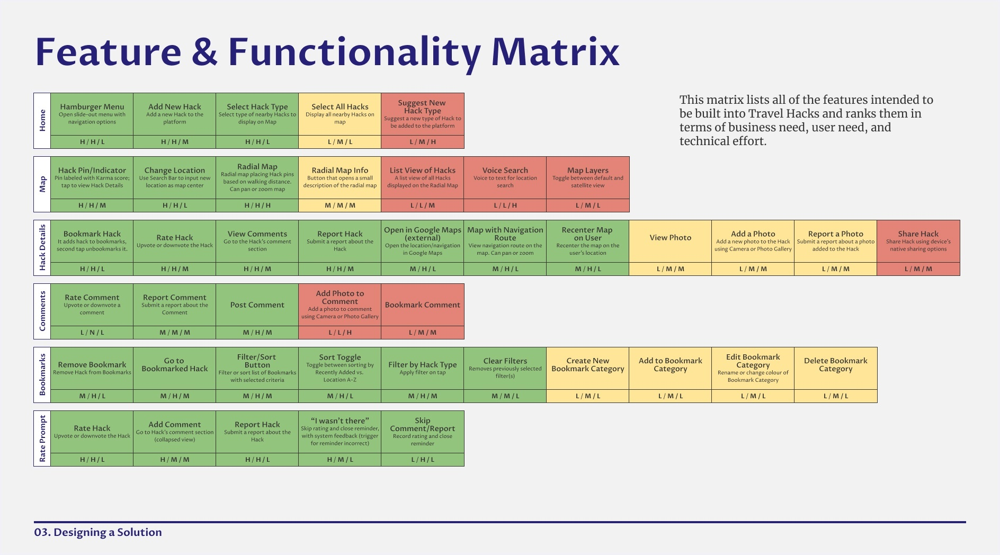
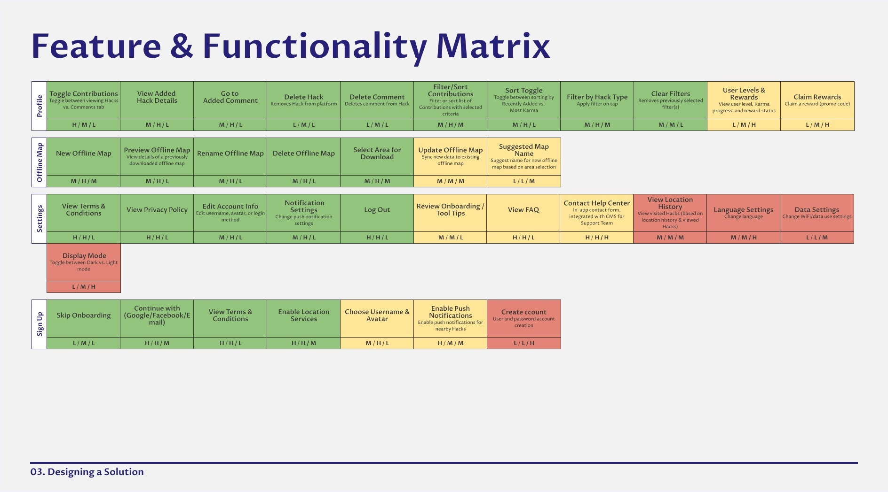
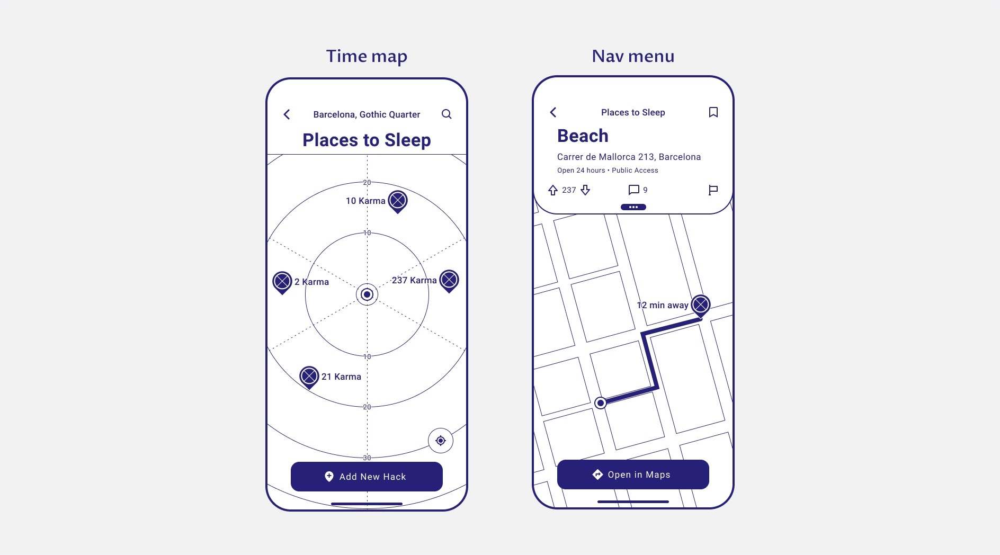
- ✓Map-first, location-based discovery
- ✓Granular budget hacks (free WiFi, toilets, food)
- ✓Community moderation (upvote/downvote)
- ✓In-the-moment access
- ✓Offline capability
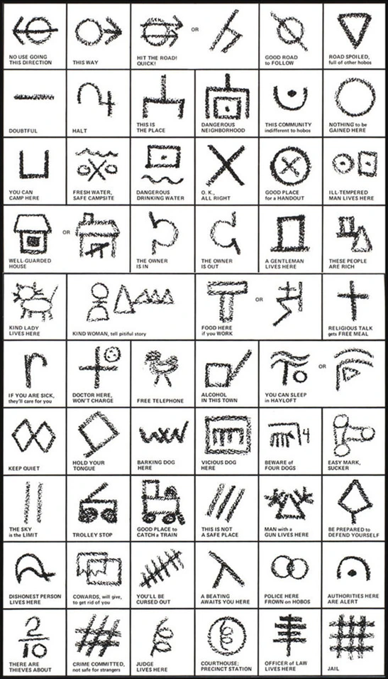
Behavioral Framework
Analyzed 6 platforms (Reddit, Couchsurfing, MAPS.ME, WiFi Map, Flush, Mapstr). Finding: No platform combines crowdsourced advice with instant, location-based access and proper moderation.
Translating Insights to Features
From Research to Design
Users frustrated by scattered info
Design Decision
Single map-based interface
Need for instant, location-based tips
Design Decision
GPS-powered proximity filters
Trust peer recommendations
Design Decision
Upvote/downvote moderation system
Budget consciousness is #1 priority
Design Decision
Focus on money-saving hacks
"Card sorting validated dual-path structure — users think in 'find' vs. 'add' modes"
— Validation Testing
User Flow — Finding a Hack
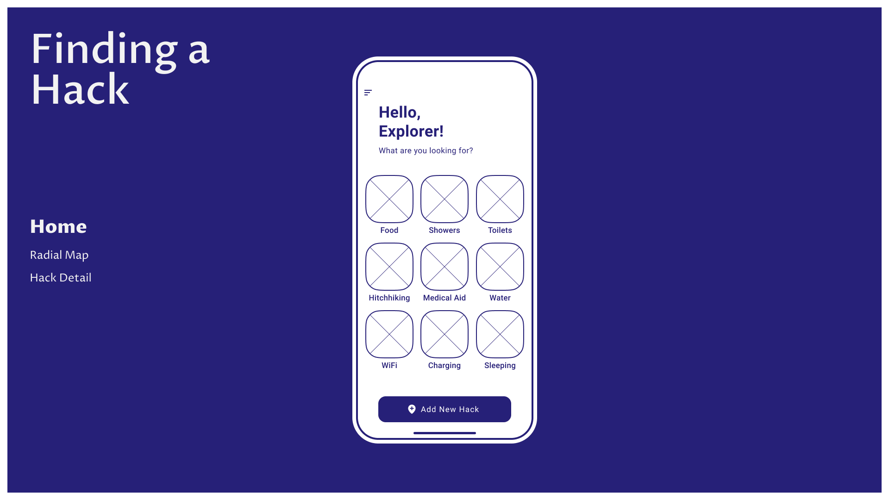
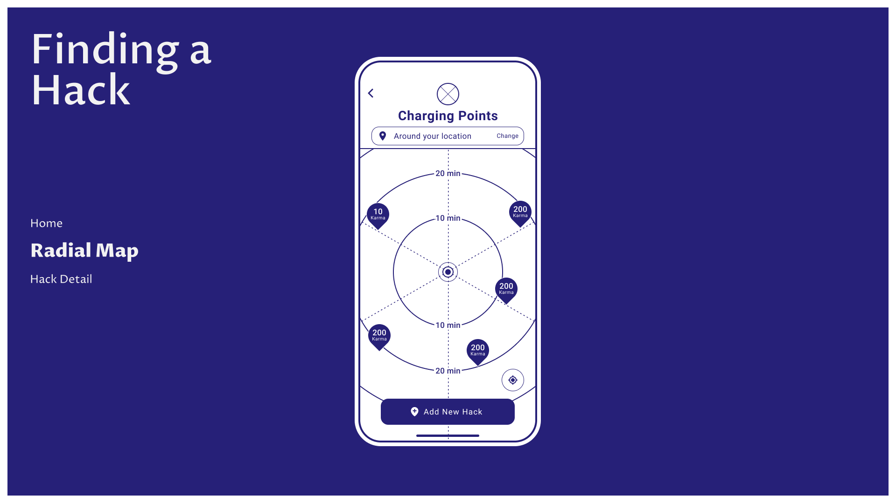
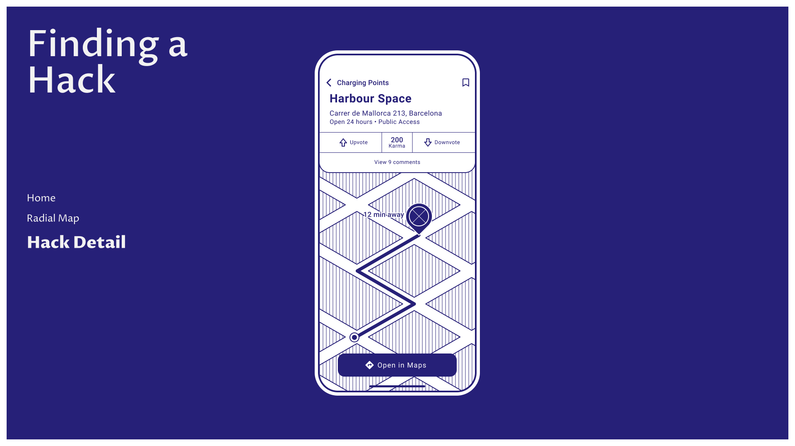
User Flow — Adding a Hack
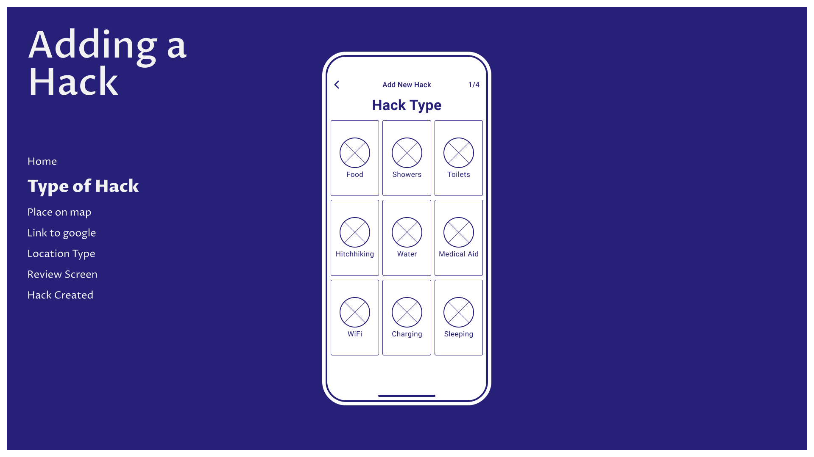
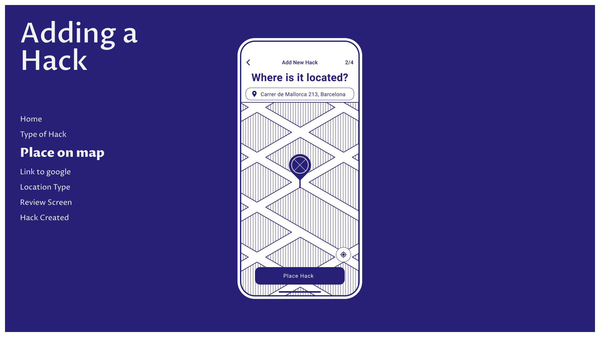
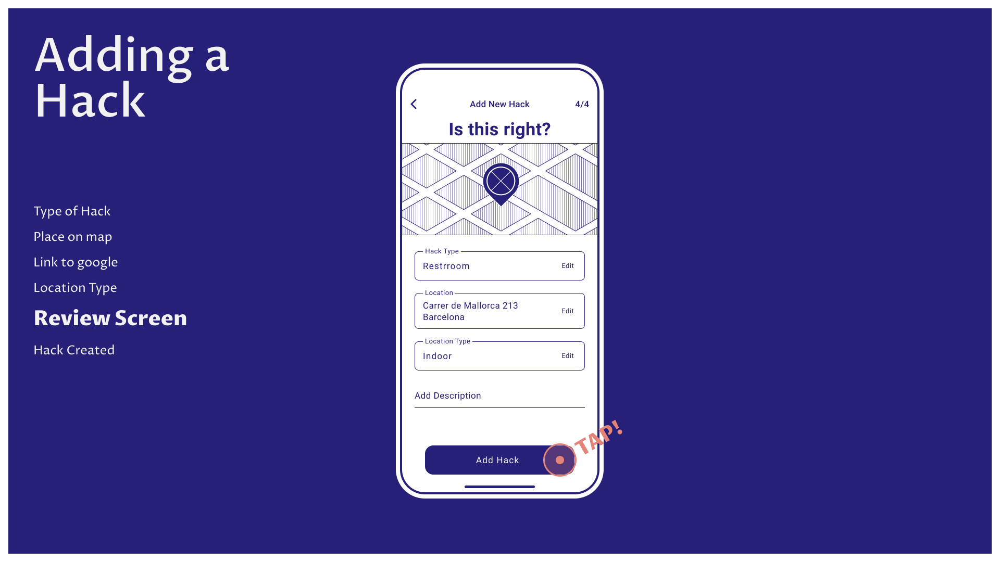
Outcomes & Reflections
- Semi-structured Interviewing
- Thematic Analysis
- Stakeholder Research
- Research Synthesis
- Strategic Thinking
- Interviews
- Thematic Analysis
- Competitive Analysis
- Card Sorting
Project Deliverables
This research identified a critical gap in Lonely Planet's ecosystem
and validated a specific, actionable solution for Gen Z backpackers' unmet needs during travel.
The concept addresses real pain points with a research-backed approach to crowdsourced, in-the-moment discovery.
Thank you for reading ✦